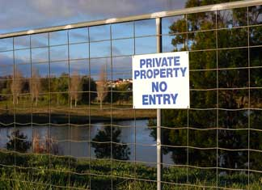

People have different views on privacy and property rights. Some don’t mind if people walk across their land. Others don’t want anyone on their property without permission. (For more on this view, read No Trespassing Signs and Modern Day Monkey Wrenching.) But, those who are concerned about trespassers list multiple reasons:
1. They enjoy their privacy.
2. Concerns about theft and vandalism.
3. They want to protect livestock from hunters or other threats. Many livestock owners now have concerns about biosecurity. That includes disease spread unintentionally and bioterrorism (causing disease and disrupting the food supply).
4. Avoiding liability if a stranger is hurt accidentally while on your property.
If you want to keep unwanted guests off your acreage, start by installing a good perimeter fence. Casual passersby most likely won’t climb over a wire-mesh fence and are even less likely to crawl through barbed wire. Limit access points, too - fewer gates and driveways can reduce the number of people who drive onto the property.
You can post signs to make people aware that your property is private. Without signs that say “posted” or “no trespassing,” trespassing is still illegal (though this varies by state, too). However, the signs may inadvertently keep away certain people you want to see. In some instances, you can include “by written permission only” on the signs to allow legal access to propane delivery drivers, trash pickup crews or others you do business with. Signs often must include contact information of the landowner. Required spacing of the signs varies by state.
In some states hunters have a right to pursue injured game onto another person’s property without permission.
Even if you don’t have signs posted, trespassers are legally required to leave immediately if you tell them to do so. You can’t use physical force to remove someone from your property, and you also cannot make a citizen’s arrest to detain a trespasser. But you can call law enforcement to request that they remove or arrest a trespasser. If there are no other charges (theft, assault, etc.), trespassing fines usually are low - $50 to $500.
In some states, you can use force (even lethal force) to remove someone from your house, but these laws do not apply to trespassers on your land or in outbuildings.
The bottom line on trespassing laws is that they vary significantly from state to state. You can find a brief overview of some state’s regulations by clicking here. Some states have detailed information about trespassing laws online. For links to your state government, check the Law Library of Congress site.
Not everyone feels the same way about allowing others access to their land. In fact, some people feel quite strongly that walkers and hikers should be allowed to pass over anyone’s private property. For more on this philosophy, read No Trespassing Signs and Modern Day Monkey Wrenching.|
 ISTOCKPHOTO/JENNY BONNER Signs such as this may or may not impact your rights as a landowner. It depends on the laws in your state. |
|
|